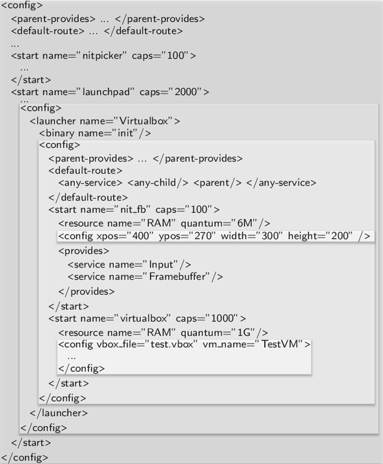
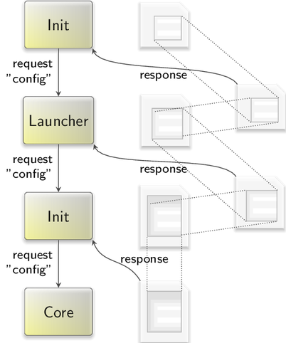
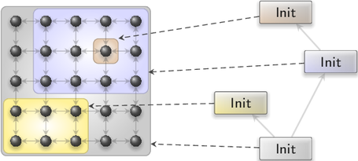

There are manifold principal approaches to configure different aspects of an operating system and the applications running on top. At the lowest level, there exists the opportunity to pass configuration information to the boot loader. This information may be evaluated directly by the boot loader or passed to the booted system. As an example for the former, some boot loaders allow for setting up a graphics mode depending on its configuration. Hence, the graphics mode to be used by the OS could be defined right at this early stage of booting. More prominently, however, is the mere passing of configuration information to the booted OS, e.g., in the form of a kernel command line or as command-line arguments to boot modules. The OS interprets boot-loader-provided data structures (i.e., multiboot info structures) to obtain such information. Most kernels interpret certain configuration arguments passed via this mechanism. At the OS-initialization level, before any drivers are functioning, the OS behavior is typically governed by configuration information provided along with the kernel image, i.e., an initial file-system image (initrd). On Linux-based systems, this information comes in the form of configuration files and init scripts located at well-known locations within the initial file-system image. Higher up the software stack, configuration becomes an even more diverse topic. I.e., the runtime behavior of a GNU/Linux-based system is defined by a conglomerate of configuration files, daemons and their respective command-line arguments, environment variables, collections of symlinks, and plenty of heuristics.
The diversity and complexity of configuration mechanisms, however, is problematic for high-assurance computing. To attain a high level of assurance, Genode's architecture must be complemented by a low-complexity yet scalable configuration concept. The design of this concept takes the following considerations into account:
To be applicable across a variety of kernels and hardware platforms, the configuration mechanism must not rely on a particular kernel or boot loader. Even though boot loaders for x86-based machines usually support the multiboot specification and thereby the ability to supplement boot modules with additional command lines, boot loaders on ARM-based platforms generally lack this ability. Furthermore, even if a multiboot compliant boot loader is used, the kernel - once started - must provide a way to reflect the boot information to the system on top, which is not the case for most microkernels.
The configuration mechanism is an intrinsic part of each component. Hence, it affects the trusted computing base of every Genode-based system. For this reason, the mechanism must be easy to understand and implementable without the need for complex underlying OS infrastructure. As a negative example, the provision of configuration files via a file system would require each Genode-based system to support the notion of a file system and to define the naming of configuration files.
Passing configuration information as command-line arguments to components at their creation time seems like a natural way to avoid the complexity of a file-based configuration mechanism. However, whereas command-line arguments are the tried and tested way for supplying program arguments in a concise way, the expressiveness of the approach is limited. In particular, it is ill-suited for expressing structured information as often found in configurations. Being a component-based system, Genode requires a way to express relationships between components, which lends itself to the use of a structural representation.
The requirement of a low-complexity mechanism mandates a common syntax across components. Otherwise, each component would need to come with a custom parser. Each of those parsers would eventually inflate the complexity of the trusted computing base. In contrast, a common syntax that is both expressive and simple to parse helps to avoid such redundancies by using a single parser implementation across all components.
Being the guiding motive behind Genode's architecture, the principle of least privilege needs to be applied to the access of configuration information. Each component needs to be able to access its own configuration but must not observe configuration information concerning unrelated components. A system-global registry of configurations or even a global namespace of keys for such a database would violate this principle.
Supplying configuration information at the construction time of a component is not sufficient for long-living components, whose behavior might need to be adapted at runtime. For example, the assignment of resources to the clients of a resource multiplexer might change over the lifetime of the resource multiplexer. Hence, the configuration concept should provide a means to update the configuration information of a component after it has been constructed.
Genode's configuration concept is based on the ROM session interface described in Section Read-only memory (ROM). In contrast to a file-system interface, the ROM session interface is extremely simple. The client of a ROM service specifies the requested ROM module by its name as known by the client. There is neither a way to query a list of available ROM modules, nor are ROM modules organized in a hierarchic name space.
|  |
|
Nested system configuration
|
The ROM session interface is implemented by core's ROM service to make boot modules available to other components. Those boot modules comprise the executable binaries of the init component as well as those of the components created by init. Furthermore, a ROM module called "config" contains the configuration of the init process in XML format. To obtain its configuration, init requests a ROM session for the ROM module "config" from its parent, which is core. Figure img/nested_config shows an example of such a config ROM module.
|  |
|
Successive interception of "config" ROM requests
|
The config ROM module uses XML as syntax, which supports the expression of arbitrary structural data while being simple to parse. I.e., Genode's XML parser comes in the form of a single header file with less than 400 lines of code. Init's configuration is contained within a single <config> node.
Each component started by init obtains its configuration by requesting a ROM module named "config" from its parent. Init responds to this request by handing out a locally-provided ROM session. Instead of handing out the "config" ROM module as obtained from core, it creates a new dataspace that solely contains the portion of init's config ROM module that refers to the respective child. Analogously to init's configuration, each child's configuration has the form of a single <config> node. This works recursively. From each component's perspective, including the init component, the mechanism for obtaining its configuration is identical – it obtains a ROM session for a ROM module named "config" from its parent. The parent interposes the ROM session request as described in Section Interposing individual services. Figure img/config_virtualization shows the successive interposing of "config" ROM requests according to the example configuration given in Figure img/nested_config. At each level, the information structure within the <config> node can be different. Besides following the convention that a configuration has the form of a single <config> node, each component can introduce arbitrary custom tags and attributes.
Besides being simple, the use of the ROM session interface for supplying configuration information has the benefit of supporting dynamic configuration updates over the lifetime of the config ROM session. Section Read-only memory (ROM) describes the update protocol between client and server of a ROM session. This way, the configuration of long-living components can be dynamically changed.
The init component plays a special role within Genode's component tree. It gets started directly by core, gets assigned all physical resources, and controls the execution of all subsequent component nodes, which can be further instances of init. Init's policy is driven by an XML-based configuration, which declares a number of children, their relationships, and resource assignments.
At the parent-child interface, there are two operations that are subject to policy decisions of the parent: the child announcing a service and the child requesting a service. If a child announces a service, it is up to the parent to decide if and how to make this service accessible to its other children. When a child requests a service, the parent may deny the session request, delegate the request to its own parent, implement the requested service locally, or open a session at one of its other children. This decision may depend on the service requested or the session-construction arguments provided by the child. Apart from assigning resources to children, the central element of the policy implemented in the parent is a set of rules to route session requests. Therefore, init's configuration concept is laid out around child components and the routing of session requests originating from those components. The mechanism is best illustrated by an example:
<config>
<parent-provides>
<service name="PD"/>
<service name="ROM"/>
<service name="CPU"/>
<service name="LOG"/>
</parent-provides>
<start name="timer" caps="100">
<resource name="RAM" quantum="1M"/>
<provides> <service name="Timer"/> </provides>
<route>
<service name="PD"> <parent/> </service>
<service name="ROM"> <parent/> </service>
<service name="CPU"> <parent/> </service>
<service name="LOG"> <parent/> </service>
</route>
</start>
<start name="test-timer" caps="200">
<resource name="RAM" quantum="1M"/>
<route>
<service name="Timer"> <child name="timer"/> </service>
<service name="PD"> <parent/> </service>
<service name="ROM"> <parent/> </service>
<service name="CPU"> <parent/> </service>
<service name="LOG"> <parent/> </service>
</route>
</start>
</config>
First, there is the declaration of services provided by the parent of the configured init instance. In this case, we declare that the parent provides a a LOG service. For each child to start, there is a <start> node describing the assigned RAM and capability budget, declaring services provided by the child, and holding a routing table for session requests originating from the child. The first child is called "timer" and implements the "Timer" service. The second component called "test-timer" is a client of the timer service. In its routing table, we see that requests for "Timer" sessions are routed to the "timer" child whereas requests for core's services are routed to init's parent. Per-child service routing rules provide a flexible way to express arbitrary client-server relationships. For example, service requests may be transparently mediated through special policy components acting upon session-construction arguments. There might be multiple children implementing the same service, each targeted by different routing tables. If there exists no valid route to a requested service, the service is denied. In the example above, the routing tables act effectively as a white list of services the child is allowed to use.
Access-control policies in Genode systems are based on session labels. When a server receives a new session request, the session label is passed along with the request.
A session label is a string that is assembled by the components that are involved with routing the session request from the client along the branches of the component tree to the server. The client may specify the least significant part of the label by itself. This part gives the parent a hint for routing the request. For example, a client may create two file-system sessions, one labeled with "home" and one labeled with "bin". The parent may take this information into account and route the individual requests to different file-system servers. The label is successively superseded (prefixed) by additional parts along the chain of components on the route of the session request. The first part of the label is the most significant part as it is imposed by the component in the intermediate proximity of the server. The last part is the least trusted part of the label because it originated from the client. Once the session request arrives at the server, the server takes the session label as the key to select a server-side policy as described in Section Server-side policy selection.
In most cases, routing decisions are simply based on the type of the requested sessions. However, by equipping <service> nodes with the following attributes, it is possible to take session labels as a criterion for the routing of session requests into account.
The session label must perfectly match the specified string.
The first part of the label must match the specified string.
The last part of the label must match the specified string.
The session label including the child's name prefix must perfectly match the specified string. In contrast to the label attribute, which refers to the child-defined label, the unscoped_label can refer to the child's environment sessions, which have no client-defined label because they are initiated by init itself.
If no attributes are present, the route matches. The attributes can be combined. If any of the specified attributes mismatch, the route is neglected. If multiple <service> nodes match in init's routing configuration, the first matching rule is taken. So the order of the nodes is important.
In practice, usage scenarios become more complex than the basic example, increasing the size of routing tables. Furthermore, in many practical cases, multiple children may use the same set of services and require duplicated routing tables within the configuration. In particular during development, the elaborative specification of routing tables tend to become an inconvenience. To alleviate this problem, there are two mechanisms, namely wildcards and a default route. Instead of specifying a list of individual service routes targeting the same destination, the wildcard <any-service> becomes handy. For example, instead of specifying
<route> <service name="ROM"> <parent/> </service> <service name="LOG"> <parent/> </service> <service name="PD"> <parent/> </service> <service name="CPU"> <parent/> </service> </route>
the following shortform can be used:
<route> <any-service> <parent/> </any-service> </route>
The latter version is not as strict as the first one because it permits the child to create sessions at the parent, which were not white listed in the elaborative version. Therefore, the use of wildcards is discouraged for configuring untrusted components. Wildcards and explicit routes may be combined as illustrated by the following example:
<route> <service name="LOG"> <child name="nitlog"/> </service> <any-service> <parent/> </any-service> </route>
The routing table is processed starting with the first entry. If the route matches the service request, it is taken, otherwise the remaining routing-table entries are visited. This way, the explicit service route of "LOG" sessions to the "nitlog" child shadows the LOG service provided by the parent.
To allow a child to use services provided by arbitrary other children, there is a further wildcard called <any-child>. Using this wildcard, such a policy can be expressed as follows:
<route> <any-service> <parent/> </any-service> <any-service> <any-child/> </any-service> </route>
This rule would delegate all session requests referring to one of the parent's services to the parent. If no parent service matches the session request, the request is routed to any child providing the service. The rule can be further abbreviated to:
<route> <any-service> <parent/> <any-child/> </any-service> </route>
Init detects potential ambiguities caused by multiple children providing the same service. In this case, the ambiguity must be resolved using an explicit route preceding the wildcards.
To reduce the need to specify the same routing table for many children in one configuration, there is a <default-route> mechanism. The default route is declared within the <config> node and used for each <start> entry with no <route> node. In particular during development, the default route becomes handy to keep the configuration tidy and neat.
The combination of explicit routes and wildcards is designed to scale well from being convenient to use during development towards being highly secure at deployment time. If only explicit rules are present in the configuration, the permitted relationships between all processes are explicitly defined and can be easily verified.
Each <start> node must be equipped with a declaration of the amount of RAM assigned to the child via a <resource> sub node.
<resource name="RAM" quantum="1M"/>
If the specified amount exceeds the available resources, the available resources are assigned almost completely to the child. This makes it possible to assign all remaining resources to the last child by simply specifying an overly large quantum. In this case, init retains only a small amount of quota for itself, which is used to cover indirect costs such as a few capabilities created on behalf of the children, or memory used for buffering configuration data. The preserved amount can be configured as follows:
<config> ... <resource name="RAM" preserve="1M"/> ... </config>
If not specified, init has a reasonable default of 160K (on 32 bit) and 320K (on 64 bit).
Each component requires a certain amount of capabilities to live. At startup, several capabilities are created along with the component's environment sessions, in particular its PD session. At lifetime, the component consumes capabilities when creating signal handlers or RPC objects. Since the system-global amount of capabilities is a bounded resource, which depends on the used kernel and the kernel configuration, Genode subjects the allocation of capabilities to the same rigid regime as for physical memory. First, the creation of capabilities is restricted by resource quotas explicitly assigned to components. Second, capability budgets can be traded between clients and servers such that servers are able to account capability allocations to their clients.
Each <start> node can be equipped with a caps attribute with the amount of capabilities assigned to the component. As a rule of thumb, the setup costs of a component are 35 capabilities. Hence, for typical components, an amount of 100 is a practical value. To alleviate the need to equip each <start> node with the same default value, the init configuration accepts a default declaration as follows:
<default caps="100"/>
Unless a <start> node is equipped with a custom caps attribute, the default value is used.
If a component runs out of capabilities, core's PD service prints a warning to the log. To observe the consumption of capabilities per component in detail, core's PD service is equipped with a diagnostic mode, which can be enabled via the diag attribute in the target node of init's routing rules. E.g., the following route enables the diagnostic mode for the PD session:
<route> <service name="PD"> <parent diag="yes"/> </service> ... </route>
With the diag attribute enabled, core prints a log message each time the PD consumes, frees, or transfers its capability budget.
Each <start> node requires a unique name attribute. By default, the value of this attribute is used as ROM module name for obtaining the ELF binary from the parent. If multiple instances of a component with the same ELF binary are needed, the binary name can be explicitly specified using a <binary> sub node of the <start> node:
<binary name="filename"/>
This way, a unique child name can be defined independently from the binary name.
As explained in section Session routing, init routes session requests by taking the requested service type and the session label into account. The latter may be used by the server as a key for selecting a policy at the server side. To simplify server-side policies, init supports the rewriting of session labels in the target node of a matching session route. For example, a interactive shell ("noux") may have the following session route for the "home" file system:
<route>
<service name="File_system" label="home">
<child name="vfs"/>
</service>
...
</route>
At the "vfs" file-system server, the label of the file-system session will appear as "noux -> home". This information may be evaluated by the vfs's server-side policy. However, when renaming the noux instance, we'd need to update this server-side policy.
With the label-rewriting mechanism, the client's identity can be hidden from the server. The label can instead represent the role of the client, or a name of a physical resource. For example, the route could be changed to this:
<route>
<service name="File_system" label="home">
<child name="vfs" label="primary_user"/>
</service>
...
</route>
When the vfs receives the session request, it is presented with the label "primary_user". The fact that the client is "noux" is not taken into account for the server-side policy selection.
Each <start> node can host a <config> sub node. As described in Section Nested configuration concept, the content of this sub node is provided to the child when a ROM session for the module name "config" is requested. Thereby, arbitrary configuration parameters can be passed to the child. For example, the following configuration starts the timer-test within an init instance within another init instance. To show the flexibility of init's service routing facility, the "Timer" session of the second-level timer-test child is routed to the timer service started at the first-level init instance.
<config>
<parent-provides>
<service name="LOG"/>
<service name="ROM"/>
<service name="CPU"/>
<service name="PD"/>
</parent-provides>
<start name="timer" caps="100">
<resource name="RAM" quantum="1M"/>
<provides><service name="Timer"/></provides>
<route>
<any-service> <parent/> </any-service>
</route>
</start>
<start name="init" caps="1000">
<resource name="RAM" quantum="10M"/>
<config>
<parent-provides>
<service name="Timer"/>
<service name="LOG"/>
<service name="ROM"/>
<service name="CPU"/>
<service name="PD"/>
</parent-provides>
<start name="test-timer" caps="200">
<resource name="RAM" quantum="1M"/>
<route>
<any-service> <parent/> </any-service>
</route>
</start>
</config>
<route>
<service name="Timer"> <child name="timer"/> </service>
<any-service> <parent/> </any-service>
</route>
</start>
</config>
The services ROM, LOG, CPU, and PD are required by the second-level init instance to create the timer-test component. As illustrated by this example, the use of nested configurations enables the construction of arbitrarily complex component trees via a single configuration.
As an alternative to specifying the component configurations of all <start> nodes via <config> sub nodes, component configurations may be placed in separate ROM modules by facilitating the session-label rewriting mechanism described in Section Session-label rewriting:
<start name="nitpicker">
<resource name="RAM" quantum="1M"/>
<route>
<service name="ROM" label="config">
<parent label="nitpicker.config"/>
</service>
...
</route>
...
</start>
With this routing rule in place, a ROM session request for the module "config" is routed to the parent and appears at the parent's ROM service under the label "nitpicker.config".
Most multi-processor (MP) systems have topologies that can be represented on a two-dimensional coordinate system. CPU nodes close to each other are expected to have closer relationship than distant nodes. In a large MP system, it is natural to assign clusters of closely related nodes to a given workload. As described in Section Recursive system structure, Genode's architecture is based on a strictly hierarchic organizational structure. Thereby, it lends itself to the idea of applying this successive virtualization of resources to the problem of clustering CPU nodes.
|  |
|
Successive virtualization of CPU affinity spaces by nested instances of init
|
Each component within the component tree has a component-local view on a so-called affinity space, which is a two-dimensional coordinate space. If the component creates a new subsystem, it can assign a portion of its own affinity space to the new subsystem by imposing a rectangular affinity location to the subsystem's CPU session. Figure img/affinity_spaces illustrates the idea.
Following from the expression of affinities as a rectangular location within a component-local affinity space, the assignment of subsystems to CPU nodes consists of two parts: the definition of the affinity space dimensions as used for the init instance, and the association of subsystems with affinity locations relative to the affinity space. The affinity space is configured as a sub node of the <config> node. For example, the following declaration describes an affinity space of 4x2:
<config> ... <affinity-space width="4" height="2" /> ... </config>
Subsystems can be constrained to parts of the affinity space using the <affinity> sub node of a <start> entry:
<config>
...
<start name="loader">
<affinity xpos="0" ypos="1" width="2" height="1" />
...
</start>
...
</config>
As illustrated by this example, the numbers used in the declarations for this instance of init are not directly related to physical CPUs. If the machine has merely two cores, init's affinity space would be mapped to the range 0,1 of physical CPUs. However, in a machine with 16x16 CPUs, the loader would obtain 8x8 CPUs with the upper-left CPU at position (4,0).
The number of CPU priorities to be distinguished by init can be specified with the prio_levels attribute of the <config> node. The value must be a power of two. By default, no priorities are used. To assign a priority to a child process, a priority value can be specified as priority attribute of the corresponding <start> node. Valid priority values lie in the range of
-prio_levels + 1 (maximum priority degradation) to 0 (no priority degradation).
A component can notify its parent about its graceful exit via the exit RPC function of the parent interface. By default, init responds to such a notification from one of its children by merely printing a log message but ignores it otherwise. However, there are scenarios where the exit of a particular child should result in the exit of the entire init component. To propagate the exit of a child to the parent of init, start nodes can host the optional sub node <exit> with the attribute propagate set to "yes".
<config>
<start name="noux">
<exit propagate="yes"/>
...
</start>
</config>
The exit value specified by the exiting child is forwarded to init's parent.
When used in a nested fashion, init can be configured to report its internal state in the form of a "state" report by placing a <report> node into init's configuration. The report node accepts the following arguments (with their default values shown):
specifies the number of milliseconds to wait before producing a new report. This way, many consecutive state changes - like they occur during startup - do not result in an overly large number of reports but are merged into one final report.
the maximum size of the report in bytes. The attribute accepts the use of K/M/G as units.
if enabled, the report will contain a <ram> node with the memory statistics of init.
if enabled, the report will contain a <caps> node with the capability-allocation statistics of init.
supplement the children in the report with unique IDs, which may be used to infer the lifetime of children across configuration updates in the future.
if enabled, the report will contain information about all session requests initiated by the children.
if enabled, the report will contain information about all sessions provided by all servers.
level of detail of the session information generated via requested or provided.
if enabled, the report will contain a <ram> node for each child based on the information obtained from the child's PD session.
if enabled, the report will contain a <caps> node for each child based on the information obtained from the child's PD session.
Note that the state reporting feature cannot be used for the initial instance of init started by core. It depends on the "Timer" and "Report" services, which are provided by higher-level components only.
To ease debugging, init can be instructed to print diverse status information as LOG output. To enable the verbose mode, assign the value "yes" to the verbose attribute of the <config> node.
In nested scenarios, init is able to act as a server that forwards session requests to its children. Session requests can be routed depending on the requested service type and the session label originating from init's parent.
The feature is configured by one or multiple <service> nodes hosted in init's <config> node. The routing policy is selected via the regular server-side policy-selection mechanism, for example:
<config>
...
<service name="LOG">
<policy label="noux">
<child name="terminal_log" label="important"/>
</policy>
<default-policy> <child name="nitlog"/> </default-policy>
</service>
...
</config>
Each policy node must have a <child> sub node, which denotes the name of the server with the name attribute. The optional label attribute defines the session label presented to the server, analogous to how the rewriting of session labels works in session routes. If not specified, the client-provided label is presented to the server as is.